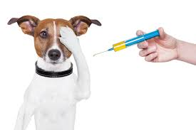

Importancia de las Vacunas
Las vacunas son fundamentales para prevenir enfermedades graves en las mascotas. Al vacunar a tu mascota, no solo la proteges a ella, sino también a otros animales y personas con las que puede entrar en contacto.
Las primeras vacunas se administran a los cachorros y gatitos a las pocas semanas de vida, y luego se refuerzan a lo largo de los años. Consulta siempre con tu veterinario para establecer un plan de vacunación adecuado.
